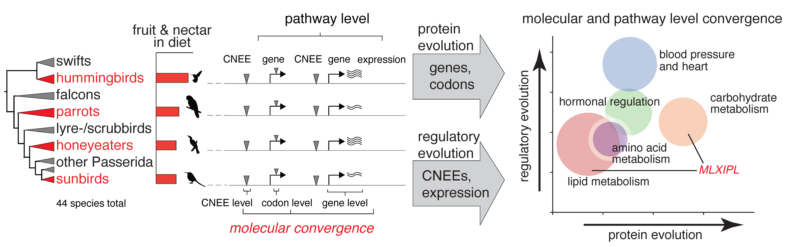

How did birds adapt their metabolism to excessive sugar consumption evading adverse consequences, which in humans would inevitably lead to type 2 diabetes? Did independent bird lineages evolve similar molecular solutions to challenges associated with nectar feeding? To answer these questions, we combined genome sequencing, comparative genomics and transcriptomics across four nectivorous clades. We also designed and performed functional tests to validate the potential role of selected gene candidates in the evolution of nectarivory in birds.
We found:
- higher molecular convergence in nectar birds
- positive selection on MLXIPL - a major regulator of sugar and lipid metabolism
- high effect of regulatory evolution on lipid and protein metabolism
- high effect of both sequence and regulatory evolution on heart function and sugar metabolism
